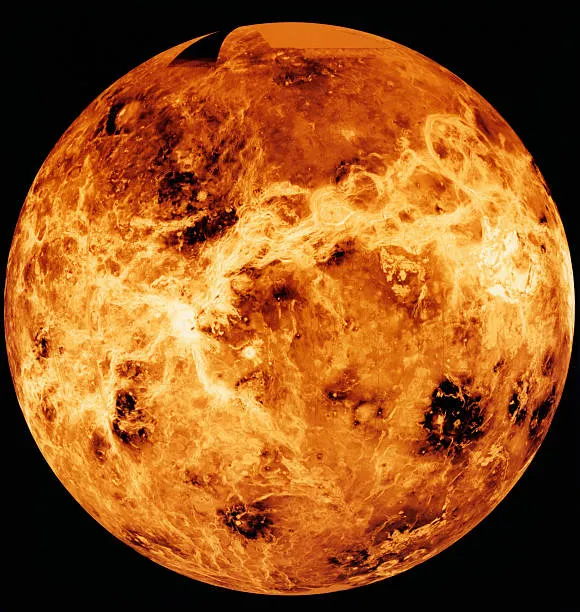

Venus is the second planet from the Sun and is similar to Earth in size, mass, and overall composition. Because of these similarities, Venus is sometimes called Earth's "sister planet." However, its environment is extremely different from Earth's. Venus has a diameter of about 12,104 kilometers and is covered by a thick atmosphere and clouds that make its surface difficult to observe from space.
Venus has the hottest surface of any planet in the Solar System. Its atmosphere is made mostly of carbon dioxide, with thick clouds of sulfuric acid. The dense atmosphere creates an extreme greenhouse effect that traps enormous amounts of heat. Surface temperatures remain around 465°C (870°F), hot enough to melt lead. The atmospheric pressure on Venus is also roughly 90 times greater than Earth's surface pressure
The surface of Venus contains mountains, valleys, plains, volcanoes, and large impact craters. Much of the planet appears to have been shaped by volcanic activity. Venus has thousands of volcanoes, although scientists are still studying how many remain active today. The planet's surface is hidden beneath its thick clouds, so spacecraft have used radar to map the terrain.